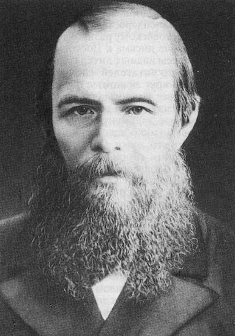
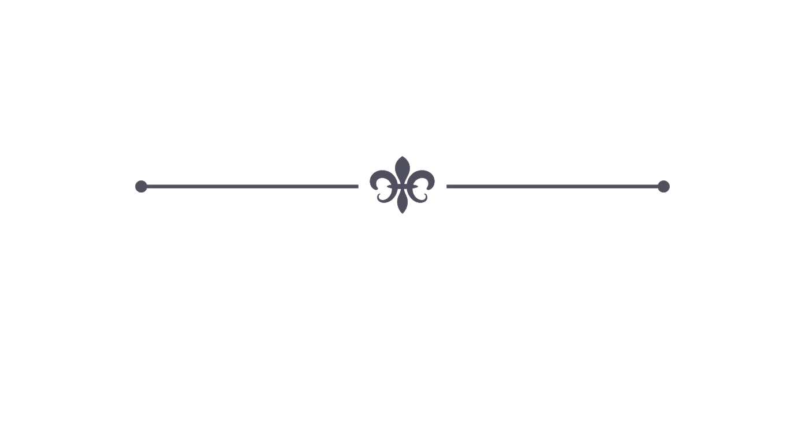

საინტერესო ფაქტები

მეფე ალექსანდრე მეორემ დოსტოევსკის სთხოვა, რომ მისი შვილებისთვის ესწავლებინა
დრო და დრო დოსტოევსკი სახელს უფრო იხვეჭდა. იგი უფრო და უფრო პოპულარული ხდებოდა არა მხოლოდ რუსეთში, არამედ მთელ ევროპაშიც. ერთხელაც, როდესაც დოსტოევსკი ევროპიდან რუსეთშიდ დაბრუნდა, მეფემ, ალესანდრე მეორემ თავისთან დაიბარა, რათა მოესმინა მისი მომავალი ნამუშევარი. მას შემდეგ, რაც მეფეს ფიოდორის ნამუშევარი მოეწონა, მან მწერალს თავისი ორი შვილის მასწავლებლობა შესთავაზა. ამ ფაქტის შემდეგ კი დოსტოევსკი კიდევ უფრო პოპულარული გახდა.
მას რამდენიმე სასიყვარულო ურთიერთობა ჰქონა
ფიოდორს ორი ცოლი ჰყავდა (პირველი 1864 წელს გარდაიცვალა). მისი პირველი სასიყვარულო ურთიერთობა ქორწინებამდე იყო. ის იყო ქალი, რომლის გარეშეც მწერალი უსუსური იყო, მაგრამ ამ ქალბატონმა ცოლობაზე უარი უთხრა. შემდეგი ორი პირველი ქორწინების დროს იყო. ერთი კომედიური მსახიობი იყო, მეორე კი უბრალოდ ბოროტად უყვარდა, რასაც თვითონ უბრალოდ ეგოიზმად აღიქვამდა. მისი სასიყვარულო ურთიერთობები მაშინ დასრულდა, როდესაც მან მეორე მეუღლე, ანა გიორგიევნა სნიტკინა გაიცნო. იგი სტენოგრაფისტად მუშაობდა ფიოდორის რომანზე “მოთამაშე” (Игрокъ). აღსანიშნავია ის ფაქტიც, რომ ქორწილის დროს ანა 21 წლის იყო, ხოლო დოსტოევსკი 35-ის.

Contact Us
Feel free to contact me if you have any questions about Dostoevsky. We will try to satisfy your needs in the shortest possible time.
523 12-32-13
Dostoevsky@gmail.com
Tbilisi, Georgia